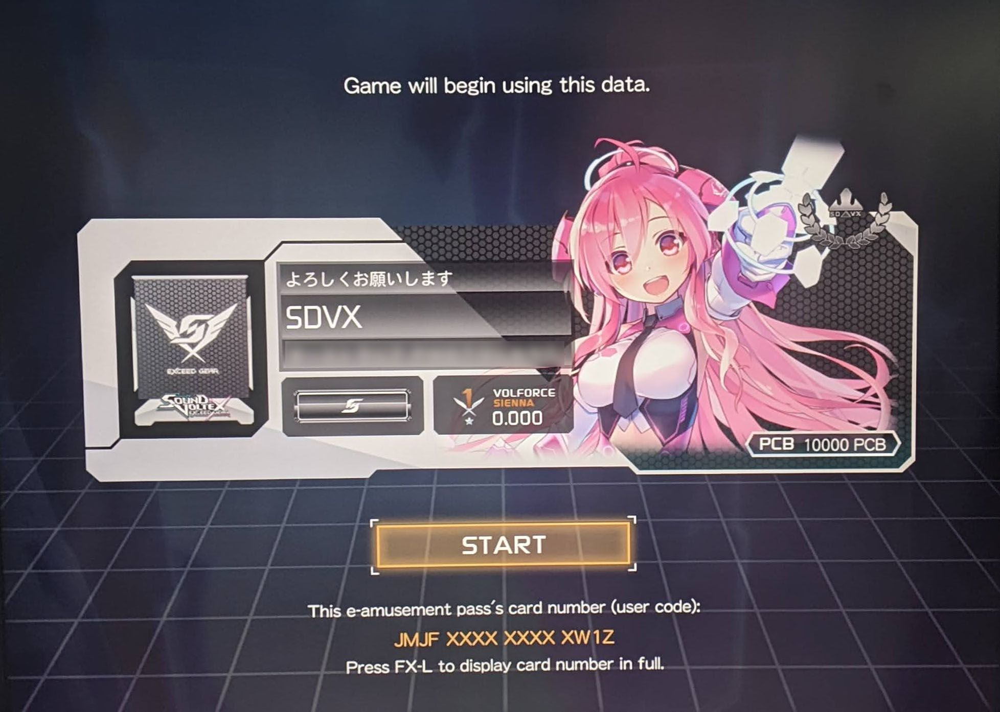

Personal Account
SDVX implements a personal account system through Konami and e-amusement for players to track statistics, customize their gameplay, and more!
Visual representation of profile of player upon logging in.
Crew Members and Appeal Cards
Appeal cards are used as a players identifying graphic (profile picture)
Crew members are characters that will cheer you on as you play the game: greeting you as you sign in, saying goodbye as you sign out, congratulating you or cheering you up upon song completion, etc.